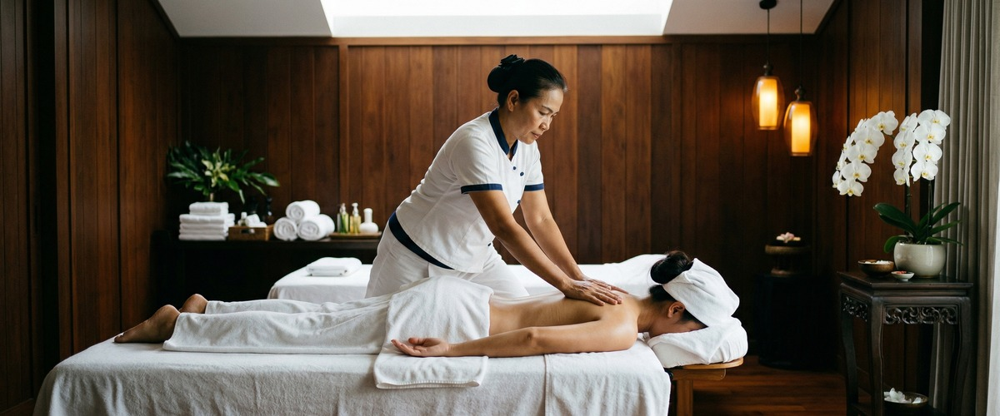
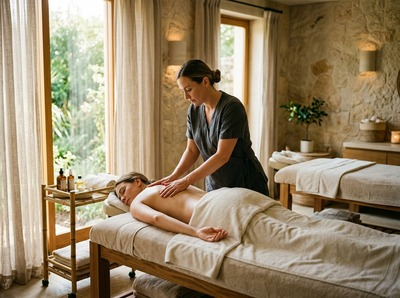
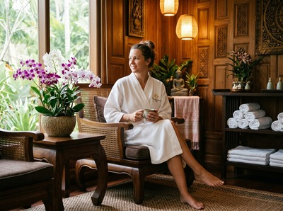

For partners who want to share something genuinely restorative, a couples Thai massage in Glasgow offers more than a night out.

It is time set aside together, away from screens and schedules, where both of you leave feeling physically lighter and properly reconnected.
Couples Thai massage combines acupressure, assisted stretching, and Sen energy line work. Two therapists work at the same time in the same room — one for each of you.
Each session is fully tailored to the individual. The shared setting never comes at the cost of the treatment itself.

At Serendipity Massage Therapy & Wellness, every technique is drawn from traditional Thai massage practice. That is the foundation of everything we do.
Pressure levels are agreed with each person before the session starts. You both get exactly what your body needs.
This session suits any two people who want real therapeutic massage — together. Some couples rarely slow down at the same time. Others are marking a birthday or anniversary.
Close friends often find it a more meaningful option than a standard night out. It works just as well for first-timers as it does for regular massage clients. It is a good fit whether you carry a lot of physical tension or simply need deep rest.
Sessions run for 60 or 90 minutes. You will both be welcomed into the same treatment room. Your therapists will carry out a brief check-in to understand what each of you needs.
Traditional Thai massage is done fully clothed on a comfortable mat. There is nothing to bring and no special preparation required.

Your therapists work through assisted stretches and acupressure, adjusting pace and pressure as they go. Afterwards, most clients describe a feeling of release and ease that is noticeably different from everyday tiredness.
You can book your couples session online and choose your preferred time slot together.
At Serendipity Massage Therapy & Wellness, every therapist is trained to the same professional standard. The techniques were developed by head therapist Jariya Malone.
Both practitioners in your couples session are experienced at reading what each client needs. They adjust throughout.
Our Hope Street studio sits in the heart of Glasgow city centre. It is a calm, unhurried space built for this kind of shared treatment.
If you are ready to make a booking, reserve your couples appointment here.
No. Traditional Thai massage is performed fully clothed throughout. You will be asked to wear comfortable, loose-fitting clothing that allows free movement, and your therapist will guide you through everything. No oils are used unless you choose a Thai Oil Massage or aromatherapy treatment instead.
We offer couples sessions in 60 and 90-minute durations. If either of you carries significant tension or you want a more thorough treatment, the 90-minute session allows more time to work through the full body. You can confirm your preferred duration when you book your couples massage online.
Most clients feel a clear sense of physical ease and calm right afterwards. Muscles that were tight before tend to feel released. Many people also report sleeping better that evening. It is worth keeping the rest of the day light if you can, to let the effects settle properly.
Absolutely. If neither of you has had a Thai massage before, your therapists will explain what to expect before the session begins. Pressure is always adjusted to your comfort level. You are free to ask your therapist to ease off or focus on a specific area at any point during the treatment.
Many couples find that once a month works well. It gives the body time to absorb the benefits while stopping tension from building up again. That said, there is no set rule. Some clients book more often when stress or physical discomfort is high. Others come for specific occasions.
The treatment itself is the same. The only difference is that both sessions happen at the same time, in the same room, with two separate therapists. Each person receives a full, tailored massage. Nothing is cut short or shared to fit the format. Pressure levels are set independently for each client.